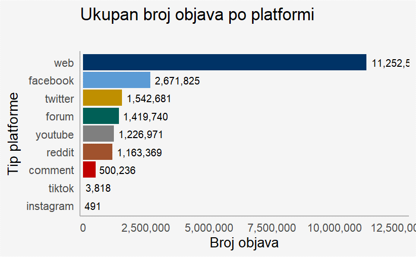
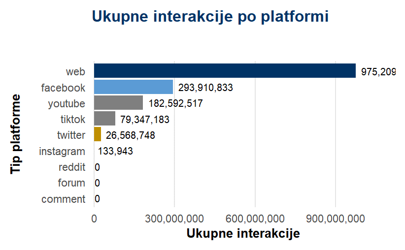
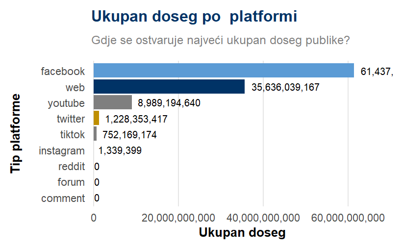
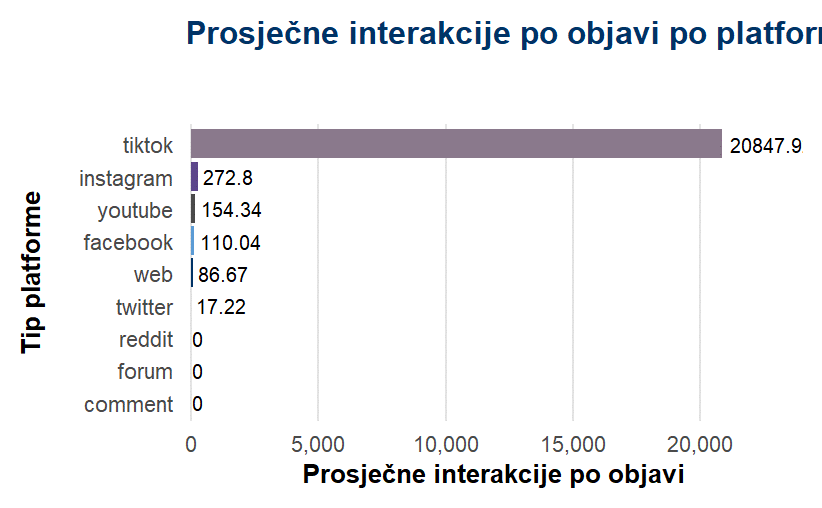

Digitalni tragovi ekonomskog života
Vodič kroz najvažnije (nove) metode ekonomske analize
Sadržaj
- Novi ekonomski krajolik: Kako je digitalna tehnologija promijenila ekonomiju?
- Novi ekonomski alati: ML, NLP i CSS.
- Primjene: Primjeri u raznim poljima.
- Izazovi i nove istraživačke granice: Privatnost, pristranost i što slijedi…
- Zaključak i resursi: Poruke i daljnje čitanje.
1. Novi ekonomski krajolik
Digitalna ekonomija ne odnosi se samo na nove podatke. Radi se o novim ekonomskim strukturama koje proizvode te podatke.
Pri tome ne govorimo o zamjeni za staru teoriju, već pomaku u naglasku.
Što se događa sa standardnim ekonomskim modelima u okruženju gdje ključni transakcijski i informacijski troškovi padaju prema nuli?
Digitalna ekonomija može se (ekonomski/intuitivno) razumjeti kroz smanjenje pet ključnih troškova:
- Pretraga: Pronalaženje informacija, cijena, proizvoda i ljudi.
- Replikacija: Kopiranje digitalnih dobara (softver, mediji) uz nulti marginalni trošak.
- Transport: Prijenos digitalnih dobara i informacija globalno, trenutno.
- Praćenje: Bilježenje i povezivanje ponašanja korisnika kroz vrijeme.
- Provjera: Potvrđivanje reputacije i povjerenja (npr. sustavi recenzija).
| Smanjenje troška | Implikacija | Primjer | Rezultirajući digitalni podaci |
|---|---|---|---|
| Pretraga | Disperzija cijena, tržišno spajanje | Kada na Googleu tražite “najbolje tenisice”, ne dobivate samo odgovor. Vi stvarate podatak. Google bilježi vaš upit, koje ste linkove pogledali, a koje ignorirali. Agregacija milijuna takvih “tragova” postaje moćan podatak za predviđanje trendova. | Dnevnici pretraživanja (Search logs), Google Trends, Podaci o putanji klika (Click-path data) |
| Replikacija | Nesuparništvo, novi poslovni modeli | Kada preslušate pjesmu na Spotifyju, replikacija te pjesme košta 0 kn. Ali Spotify bilježi taj čin. Jeste li ju preskočili nakon 10 sekundi? Jeste li ju dodali na playlistu? Ti “logovi korištenja” govore o vrijednosti tog dobra i temelj su za preporuke. | Podaci o streamingu, Statistike pregleda (YouTube views), Vrijeme zadržavanja (Watch time |
| Transport | Smanjena uloga geografije | Vaš pametni telefon stalno prijavljuje svoju lokaciju. Uber koristi taj podatak da vas spoji s najbližim vozačem. Platforma poput Upworka koristi vašu IP adresu da potvrdi da ste u jednoj zemlji, a klijent u drugoj – dokazujući rad na daljinu. | GPS koordinate, IP adrese (za mapiranje lokacije), Podaci o prekograničnim transakcijama |
| Praćenje | Diskriminacija cijena, ciljano oglaš. | Gledali ste cipele na jednoj stranici, a oglas za njih vas prati po cijelom internetu. To je “pixel” ili kolačić za praćenje. Stvorio je korisnički profil o vama (“zainteresiran za cipele, br. 43”) i sada tvrtke licitiraju kako bi vam prikazale oglas. | Kolačići za praćenje (Tracking cookies), ID uređaja, Povijest kupovine i povijest pregledavanja |
| Provjera | Mehanizmi reputacije i povjerenja | Kako vjerovati strancu da ćete ući u njegov auto (Uber) ili spavati u njegovom stanu (Airbnb)? Ne vjerujete osobi, vjerujete sustavu. Ocjena od 5 zvjezdica koju je ostavio prethodni korisnik je podatak koji stvara povjerenje ni iz čega. | Sustavi ocjenjivanja (npr. 4.8 zvjezdica), Tekstualne recenzije korisnika, Digitalne značke (“Superhost”, “Verified”) |
Posljedica 1: Metodološki imperativ
Ove nove ekonomske aktivnosti stvaraju novu vrstu podataka:
- Veliki: Masivni, visokofrekventni, visokodimenzionalni.
- Nestrukturirani: Tekst, slike, mrežne veze.
Tradicionalni ekonometrijski alati, stvoreni za male, strukturirane podatke niske frekvencije, nisu dovoljni. To prisiljava ekonomiste da usvoje alate iz računarstva.
Digitalni medijski prostor RH (pregled podataka)
Ovaj skup podataka obuhvaća cjelokupni digitalni medijski prostor RH.
- Vremenski okvir: Lipanj 2021. – Lipanj 2024.
- Ukupan broj objava: ~21 milijun
- Pokrivene platforme: Web portali, Facebook, Instagram, X, YouTube, Reddit, forumi i komentari.
- Broj značajki: 49 varijabli po svakoj objavi (autor, sentiment, doseg, itd.).




2. Novi ekonomski alati
Kako su se ekonomisti prilagodili novim podacima?
Posljedica 2: Uspon platformi
- Višestrane platforme: Povezuju različite skupine (npr. kupci i prodavači; korisnici i oglašivači).
- Mrežni efekti: Vrijednost platforme raste kako je više ljudi koristi.
- Algoritamsko kuriranje: Na ovoj skali (npr. 1 milijarda objava dnevno na Meti), algoritmi nisu opcija. Oni jesu tržišni mehanizam.
Ekonometrija vs. Strojno učenje
- Kauzalno zaključivanje
- Pitanje: Zašto?
- Koji je uzročni učinak X na Y?
- Nepristrani, interpretirani koeficijenti.
- Predviđanje
- Pitanje: Što?
- Koje je najtočnije predviđanje za Y?
- Točnost predviđanja (čak i uz “crne kutije”).
Zašto je ML sada nezaobilazan?
ML modeli su prikladniji za…
- Obradu netradicionalnih podataka: Izdvajanje značajki iz teksta, slika i videa.
- Uvažavanje nelinearnosti: Pronalaženje složenih obrazaca u visokodimenzionalnim podacima (npr. tisuće prediktora).
- Poboljšanje predviđanja: Nadmašivanje tradicionalnih modela kada je točnost glavni cilj.
Revolucija tekstualnih podataka
Ovo je možda najznačajniji metodološki pomak. Tretira nestrukturirani tekst kao formalni izvor podataka za kvantitativnu analizu.
Procesuiranje teksta
Resursi za CSS
Temelji i alati
- R for Data Science
- Apsolutno nezaobilazna knjiga za rad s podacima u R-u.
- r4ds.had.co.nz
- Data Wrangling with R
- Odličan tečaj s fokusom na pripremu i čišćenje podataka.
- stat545.com
Obrtničke vještine
- The Missing Semester
- Vještine koje vam trebaju, a niste znali: command line, Git, i dr.
- missing.csail.mit.edu
Tečajevi i primjeri
- Data Science for Economists
- Odličan uvodni tečaj Juliana Hinza.
- datascience.julianhinz.com
- UO EC607
- Konkretni primjeri i predavanja, korak po korak.
- github.com/uo-ec607/lectures
- The Plain Person’s Guide
- Filozofija rada u plain textu za dugoročnu održivost.
- plain-text.co
3. Primjene
Analiza dezinformacija
Projekt HKS-a.
Istraživački projekt
- Cilj: Borba protiv digitalnih dezinformacija o religiji.
- Metode: Analiza teksta i strojno učenje za identifikaciju štetnih narativa.
- Više o projektu: unicath.hr/digitheal
Interaktivna aplikacija
- Svrha: Omogućuje provjeru dezinformacija.
- Tehnologija: Shiny.
- Isprobajte: ;-)
Analiza sentimenta

Izračunato prema Baker et al., 2016
Nowcasting

Komunikacija središnjih banaka
Sve objave na web-u u kojima se spominje HNB.
Otprilike 21k objava.
2021 - 05/2024.


Ekonomija društvenih medija

Otvorenost i reproducibilnost
Otvoreni pristup
Sav kod, podaci i rezultati su javno dostupni, omogućujući transparentnost i suradnju.
Primjer: Projekt DigiKat
Reproducibilnost
Svatko može, koristeći naš kod i podatke, ponoviti analizu i dobiti identične rezultate.
Primjer: Znanstveni rad
4. Izazovi i nove granice
1. Glavni izazovi
Svi podaci imaju “ožiljke” svog nastanka. Naši najveći su:
️ Privatnost i etika
Pristranost i (ne)reprezentativnost
Kvaliteta i dezinformacije
2. Posljedice za istraživače
Ovi izazovi stvaraju tenzije između znanosti i prakse:
Problem pristupa: Najbolji podaci su zaključani.
Problem “crne kutije”: Algoritmi su nepoznanica.
Problem tržišne moći: Podaci stvaraju monopole.
3. Buduće granice
Put naprijed leži u spajanju disciplina i novih metoda:
Kauzalo strojno učenje
Multimodalni podaci (tekst + video + zvuk)
Ekonomija Generativne AI
Revizija algoritama
5. Zaključak
Take home…
- Nova ekonomija: Digitalna ekonomija, definirana s 5 padajućih troškova, stvorila je novu ekonomsku strukturu.
- Novi trag podataka: Ova nova ekonomija generira masivne, nestrukturirane digitalne tragove kao nusprodukt.
- Novi alati: Ekonomisti su usvojili alate iz računarstva (ML, NLP,CSS) za analizu ovih podataka.
- Novi uvidi: Ova fuzija transformira makroekonomiju, financije, tržište rada i političku ekonomiju…
- Novi izazovi: Ovaj napredak je ublažen pitanjima privatnosti, pristranosti i algoritamske netransparentnosti.
Tri ključna rada
Digitalna ekonomija
Zašto pročitati: Definitivni teorijski pregled koji postavlja temelje za razumijevanje digitalnih tržišta.
Tekst kao podatak
Zašto pročitati: Vrhunski vodič kroz metode koje pretvaraju nestrukturirani tekst u kvantitativne uvide.
Ekonomija društvenih medija
Zašto pročitati: Najnoviji pregled koji objašnjava kako platforme poput Facebooka i X-a mijenjaju ekonomiju.
Resursi i kontakti
- Svi materijali, kod i prezentacija dostupni su na GitHubu
{kind=link}
- Više projekata na mojoj web stranici
{kind=link}
- Povežimo se na LinkedInu
{kind=link}